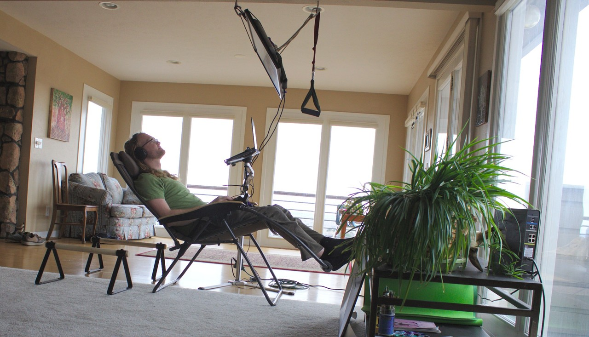
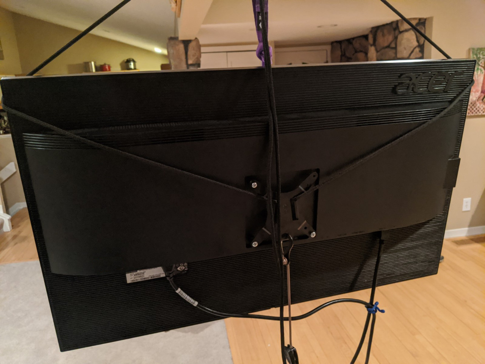
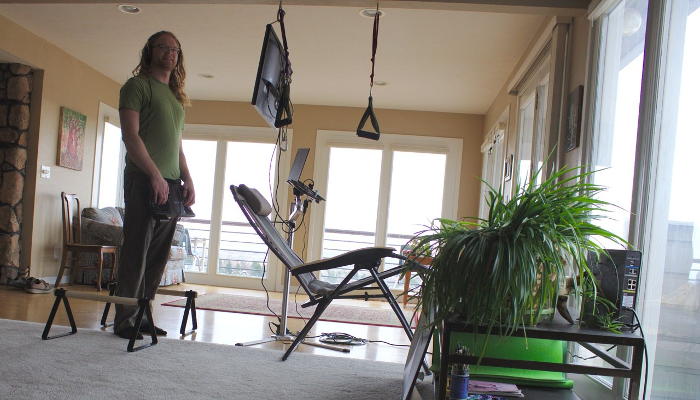
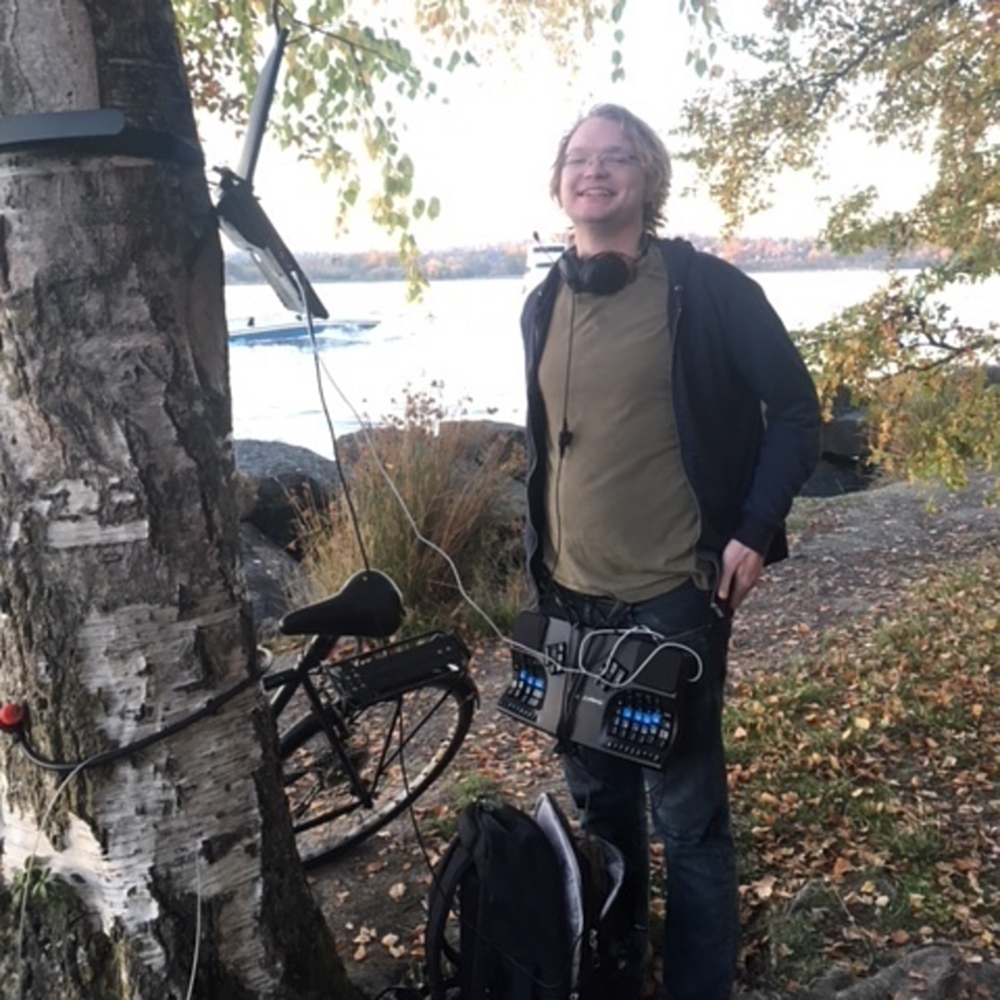
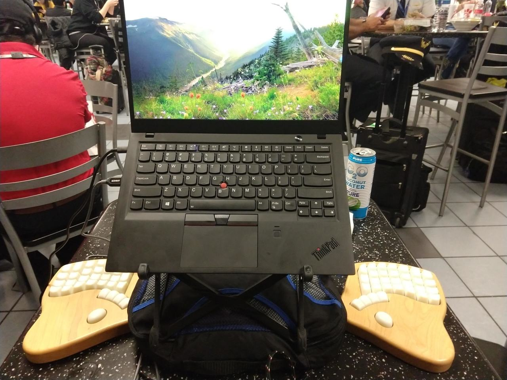
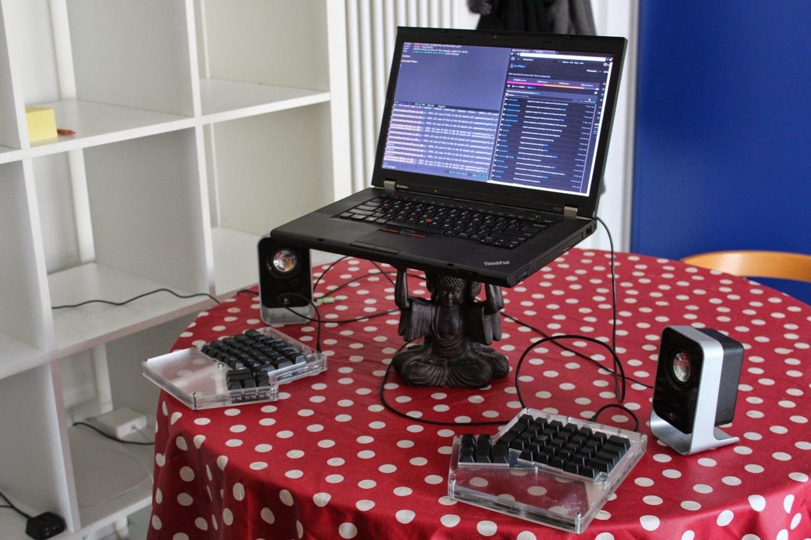
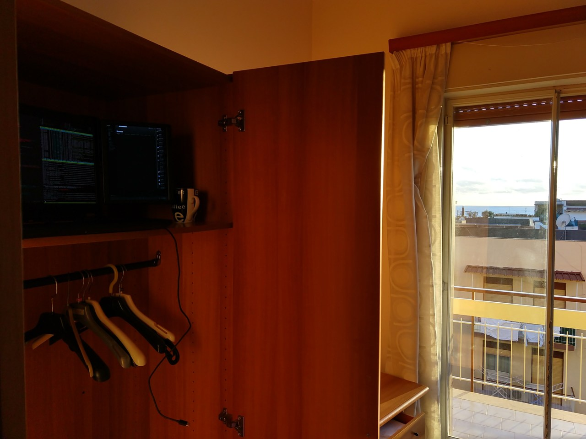
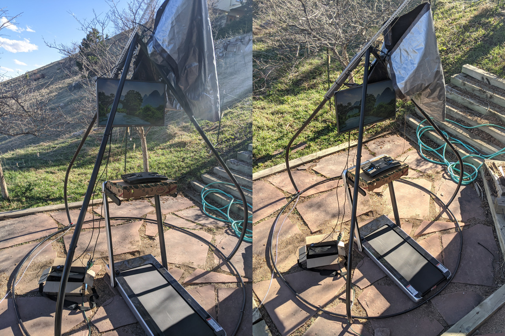

Deskless Ergonomic Work-From-Home Setups
With the recent mass migration to working from home to help mitigate the spread of covid-191, there are likely many people out there who are working from home for the first time, and do not yet have a very ergonomic setup. It occurred to me that some of my alternative computer setups might be helpful. If you are spending lots of time on the computer, it's worthwhile to experiment and hone your ergonomics. Your body will thank you!
The purpose of this post is to share a few strategies for easy and inexpensive ergonomic2 home setups, some of which may easily be seen as highly unusual. Since these ideas might help people work in much healthier ways, I wanted to present them in the best light possible, by carefully writing more structured, instructive, and prettier posts.
But you know what? Screw it! These massive societal transitions are happening right now, so this post was written in a few days, and just does a surface-level description of a variety of ideas. Hopefully the details will be filled in / clarified in the future. In the meantime, hopefully you find something useful despite the gaps!
Suspending your laptop / monitor
Typically your screen is supported by a desk. I've found suspending my screen to be a versatile, portable, and convenient way to position it. It is ergonomically helpful to entirely decouple the positioning of your screen from the positioning of your keyboard, so that both can be in a comfortable position. Here is my most recent setup:

Most of this setup is described in my "Outdoor Computing with a Deck Desk" post, the new bit is the suspended monitor!
The materials involved here are:
Heavy duty screw eye bolts, in this case they were already there to support a yoga swing. I left the yoga swing handles up, one of them turns out to be helpful for getting in and out of the recliner.
The monitor plate from a VESA mount quick release bracket$, to provide an attachment point for the rope.
Progrip "Better Than Bungee" paracord tie-downs$ to provide adjustability. These are not actually in the picture above, I was using plain rope before, but I now prefer these as they are much more adjustable.
Any sufficiently strong rope / cord will do, but I used 5mm black accessory cord$. This rope threads through the VESA mount plate, and wrap around the corners of the monitor, like this:

This has worked shockingly well! The ropes have not slipped off the corners, even when carrying the monitor around suspended upright like this. There is a potential risk that might happen at some point, so I've ordered a monitor mount$ which I believe will provide an attachment point directly above the monitor's center of mass. I'll update this post, possibly write a new post once I've attempted to use that monitor mount.
There's a lot of versatility and adjustability here:
By attaching an adjustable cord to the back of the monitor, to another hook offset back, the inclination of the monitor can be adjusted for reclining, as shown above. Now that it's more adjustable, I tend to prefer the monitor to be a foot or two closer than what's shown in the picture.
The monitor can be suspended nearly perfectly vertically, as shown in the standing section below. This may have something to do with the weight distribution of the monitor, an Acer B326HK$.
By unwrapping the rope from the corners, the monitor can be brought entirely horizontal, for a supine setup. Be sure to support the monitor when doing this, otherwise it might drop and jerk the rope.
Doing this with full size, 26lb (~12kg) monitors is a recent thing for me. Previously I'd only done this with laptops3 – for example in my post about supine computing. Here's a photo from that post:

I do this supine posture more frequently on a couch or bed, or the floor, but hammocks are my favorite! Since that post already goes into some details of the supine posture, I won't cover it much more in this one.
Deskless standing keyboard
Ok, remember what I wrote earlier about unusual but effective ideas? This is the one I've been most hesitant to share more broadly, because it initially looks very strange, but works fantastically well. Please mentally substitute in alternate versions of these pictures that make the idea seem super cool and practical to you.

Materials:
I most regularly do this with a Kinesis Advantage 2$, but I've also had success with the Keyboardio Model 01 and the Massdrop ErgoDox. These keyboards aren't cheap, but they are awesome! If you're on the computer for many hours a day, an investment in a good keyboard will amortize quickly. I can't imagine how to do this comfortably with standard ergo keyboards (please surprise me!).
For the Kinesis Advantage 2$, I use a giant releasable zip tie$ – 28" (71cm) long with 175lb (80kg) of tensile strength!
Pants with a drawstring4. The giant releasable zip tie gets looped through the drawstring, and then around the Kinesis5:


You might wonder why these pictures are outside. Well, they were originally intended for my "Tree Based Computing" post which describes a highly portable way to use your computer outside6, without sacrificing ergonomics. See that post for a few more pictures of this keyboarding posture.
This might seem too simple, perhaps not rotationally stable enough. However, I've found that rotation isn't a problem in practice – all that is needed is support that's roughly centered. I arrived at this approach after a fair bit of experimentation. See, for example, one of the very first iterations, in this photo from 2017:

Back then, I'd just assumed the keyboard needed rotational stability, and had two of the massive 28" zip ties crossing each other to create offset attachment points. I then used normal size releasable zip ties$ to secure these to my jeans' belt loops.
People's proportions, such as ape factor differ quite a bit, so it may be that you need more adjustability than I do. Using the releasable zip ties to secure the giant zip ties does have a nice advantage of providing finer adjustment of the keyboard's vertical position7.
Why a deskless standing keyboard?
You might be wondering, quite reasonably, why do something so odd looking with your keyboard? There are some very good reasons! Here are a few:
Relief from hand/wrist pain! (potentially8)
No platform needed for resting your keyboard, which can mean less furniture needed for your workstation. It's also quite portable, which is helpful for travelling or "Tree Based Computing".
Movement! The flexibility to move around quite a bit, stretch, and "dance" without interrupting typing or needing to adjust your arm positions. A typical standing desk can accommodate some movement while typing, but not all that much since the keyboard is stationary, so movement interferes more with typing. It's tough to explain this properly in text / picture form, perhaps one day there will be video explaining this more directly :)
More relaxed! My arms can mostly relax with this posture. In comparison, the prevailing ergonomic recommendation for typing while sitting typically involves elbows at an angle, with hands hovering to avoid wrist pressure (which can impinge on nerves). This requires some continuous muscle tension which just doesn't seem sustainable for long sessions.
Touch typing! Well, this is more of a prerequisite than a benefit. But if you don't already touch type, this might be an interesting way to force yourself to learn!
Stay tuned for more details, I have a post in progress going into more depth. Particularly, it explores more why this postures is ergonomically sound, and how to do it with split keyboards9.
Too wild? How about laptop stand, a box, or shelf!
Ok, I imagine for many of you this seems too weird or too much work. That's fine! I have some ideas for quick ergonomic hacks. It's no coincidence that all of these pictures happen to be from travel.
Laptop stands can be nice for elevating the screen. I quite like the portability of my Roost stand$, here being used in an airport with a Keyboardio Model 01:

Generally whatever you can do to raise your screen closer to eye level helps. Here's a funny picture from my travels in 2014, back when I had a functioning ErgoDox:

A hacky standing setup is just to put your computer on a shelf at head height, and keyboard on a lower shelf. I don't have good picture of using a shelf, but here's a photo from 2018 travels of my computer in the top of a wardrobe. The side screen is a packed pixels.

In past travels I've also placed my laptop on top of a sturdy cardboard box, with the open part of the box facing me, and within the box placed the keyboard (or half of it!).
Treadmill computing!
Walking on a treadmill while using a computer is a wonderful way to get some exercise. I find that after 10 or 20 minutes of walking, some nice exercise endorphins begin to release, which feel good and potentially aid in productivity.
Beyond that effect, I think there is something deeply satisfying about moving forward. Our minds might know that we are making great progress by sitting, thinking, and typing, but how are our bodies feeling about this? I'm quite certain they prefer to move. I think of it in terms of our evolutionary history – back in prehistory, prehumanity even, we'd be doomed to starvation if not regularly hunting, foraging, and exploring. Deep down, we feel like something is wrong if we aren't regularly moving and spending time outside.
Here's a photo of one of my most photogenic treadmill desk configurations, outside on a deck, from the summer of 2018:

Unlike the other strategies here, this certainly isn't deskless, and involves some expensive equipment10. I don't have this stuff in my new home in Colorado, as it didn't fit in my car.
Since I am now working from home, getting a new treadmill was quite justified. This time, I purchased a much less expensive treadmill$, which arrived a couple days ago. By affixing a cardboard produce box with couple releasable zip-ties, I ended up with a platform for my keyboard with a very nice tilt. This is likely to be totally different soon, but it's already quite decent. Here are a couple pictures:

I've been pleasantly surprised by this treadmill – today I walked 8.5 miles while working! I can't really give a full review, since I've only had it for 2 days. It's quite as smooth or quiet as the IMovr, but it's 1/5 the cost and works decently. I've put some more preliminary notes about it in a footnote11.
One tip to wrap this section up – for me, listening to energetic music makes treadmill computing so much more sustainable for longer durations. This is also true of the standing postures, particularly as the music often inspires me to dance! Variation in position, dynamic movements, are far more sustainable for longer durations than attempting to stand or sit still.
Variety is key
I read the book "The Healthy Programmer"$, by Joe Kutner early in my journey of finding healthier ways to work. It's a helpful book, I particularly recommend it if you are feeling sedentary / inflexible / averse to exercise. My main takeaway was that periodically switching between a variety of decent postures is preferable to trying to find a single "optimal" one. This was particularly in the context of switching between sitting and standing, but it can also be applied to switching between the following two groups of postures:
Reclining / supine: These two postures are quite similar, just a difference of some inclination. They are very relaxing and ergonomic positions, as very little muscle tension is needed, and your joints can be neutrally positioned. To me, reclined and supine seem much healthier than typical sitting. The main problem with extended use of these postures is that it's easy to get too relaxed, and get tired / lazy.
Standing / leaning / walking / dancing: These postures are all active, energetic, upright. They are great for incorporating some more muscle activation and movement into your day. They also nicely balance out the other group of more relaxing postures, by being more energetic.
I intentionally omitted sitting from the above groups, but certainly that's a viable option too. In terms of activeness it's somewhere between the above groups. To me the big issue with sitting is how easy and common it is to have compromised posture, particularly the classic slouching forward head posture, causing all kinds of spinal pain and related trouble. If it isn't mixed with more active postures, then there is also the issue with sitting being relatively sedentary.
There are lots of studies about the harmful effects of extended, chronic sitting. There are many studies about the dangers of being sedentary, including supine – laying down all day is not very healthy. There are even some studies suggesting that standing still for prolonged periods is deletorious. None of these postures are perfect, but I assert their negatives can be greatly mitigated by switching between them, so that none are done for extended periods.
I am not aware of any studies showing adverse effects of lots of walking or dancing :)
Footnotes
If you're tired of everything being about covid-19, my apologies for bringing it up at the beginning. It is the direct cause of me rushing these ideas out in the form of this post, though.↩︎
I am a hobbyist in ergonomics, I have no credentials related to ergonomics, nor have I studied much of the academic literature on the topic. Mostly, I've just followed my own intuition, sought what feels good, and avoided what causes pain. So please take my advice with a grain of salt, and perhaps experiment to see what works for you!↩︎
For suspending something as light as laptops, I've also found that "Multi Purpose No Drilling Required Ceiling Hooks Suspension and Wall Hooks Hangers"$ from the cryptic brand "CRH600" work quite well. The nice thing about these are that they do not require any permanent modifications to the ceiling.↩︎
It's a bit silly, but an alternative for jeans and other pants with a fly is to thread the giant zip tie through the top of the fly.↩︎
The Kinesis particularly ends up at a nice angle if you get the drawstring on the front side (the side with the keys).↩︎
A substantial chunk of this post was written outside with my computer on a tree post :) Here's a pic↩︎
Another option for keyboard suspension is… suspenders! Well, not exactly, ordinary suspenders are likely too elastic. I've experimented with using rope around the shoulders, and it worked pretty decently – very adjustable! It wasn't for me, though, no significant advantages over pant attachment.↩︎
I know of several people who report that this keyboard position has relieved their wrist pain. I might go into details of these anecdotes, with their permission, in future posts.
Thankfully, I personally haven't had much wrist discomfort in recent years. Many years ago I started having early symptoms, which caused me to take evasive action. Specifically, I got into split keyboards and became more tuned in to how my hands/wrists feel in a given position.↩︎
The gist of it is to wear pants with a belt or belt loops. Then use string or releasable zip ties to thread around the belt or loops, to attachment points on the corners of the keyboard halves. For the Keyboardio Model 01 the best approach I've found is to use bike rack struts like these$. The slot of the bike rack strut perfectly fits the shank of 1/4" screws that go into the keyboardio mounting hole. I haven't purchased those particular ones, but I imagine the slot size is pretty standard. This creates a rigid attachment point above the keyboard half's center of mass. For the ErgoDox, the best approach I had was to use loops of string through the corner holes for the screws. More details and images in a future post, hopefully soon! :)↩︎
Materials involved in the more elaborate outdoor treadmill desk:
- IMovR ThermoTread GT Treadmill$
- Focal Mogo leaning stool$
- Ergotron WorkFit-S$
- Ergotron LX Dual Side-By-Side Arm$
- Ergotron Tall-User Kit$ x 2
- Herman Miller Embody Chair$
A few notes about how my initial impression of the "Goplus" / "Costway" / "Gymax" branded treadmill compares to my recollection of using the [IMovr Thermotread GT][]:
- 1/5 the cost!
- Nice to be able to go faster than 2.5mph (the IMovR's upper limit). I've found I can still type decently at about 3mph.
- Much easier to move around than the IMovr, since it's about half the weight
- Not as big of a walking platform. Initially I only noticed the lower width, which means I've gotta be fairly precise about my side-to-side position. After using it a while, I'm also finding that it's just barely long enough, and so occasionally a longer stride will end up hitting the guard plastic on the back. This is not too troublesome, just mildly annoying. For others it may be no issue, I'm larger than average.
- Beeps loudly with every button press of the remote, which is annoying, definitely wouldn't be office friendly. I might open it up to disable whatever the beep is coming from.
- Units are in kilometers instead of miles, which is fine, but not intuitive for me.
{kind=link}
Some links are amazon affiliate links, which sometimes send me a bit of money when you make purchases after clicking them. The purpose of this blog is sharing information and ideas, not making money. But I figure I may as well add them, and I appreciate usage of them!